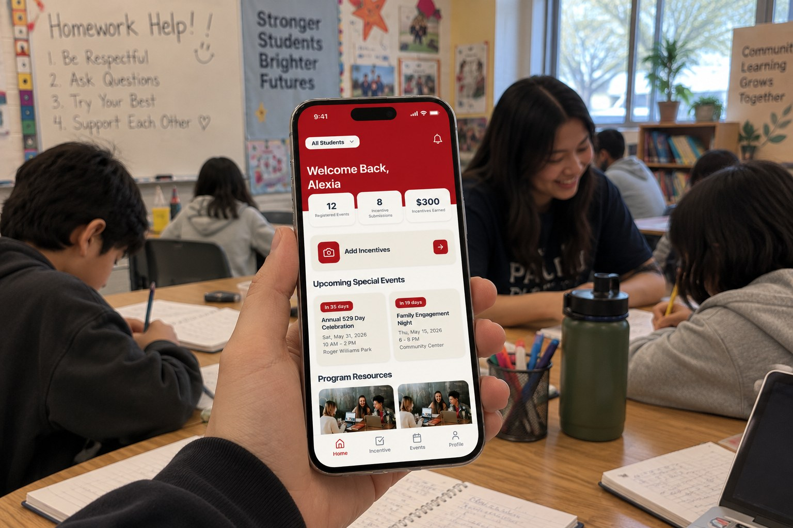
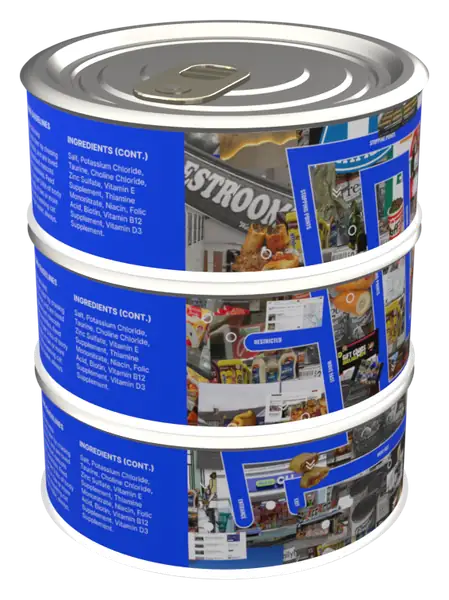
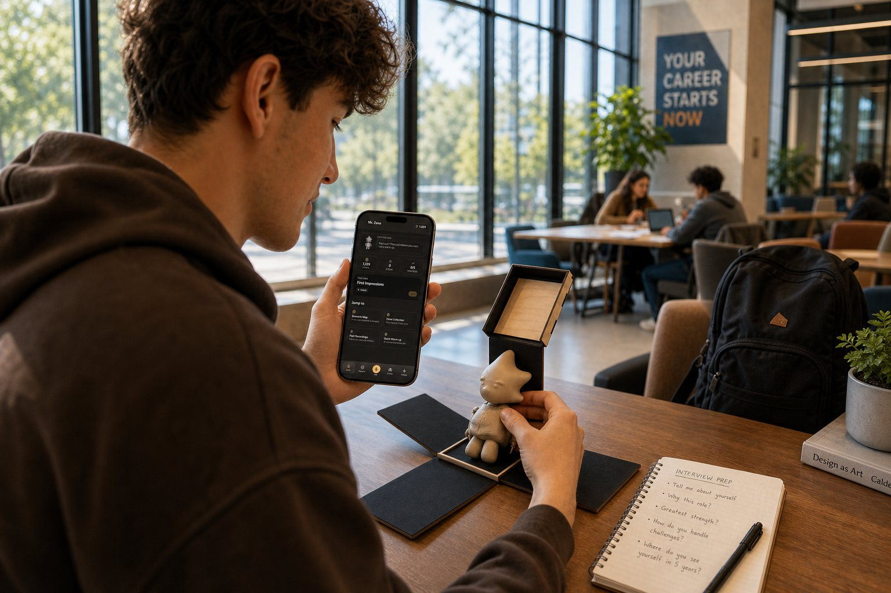
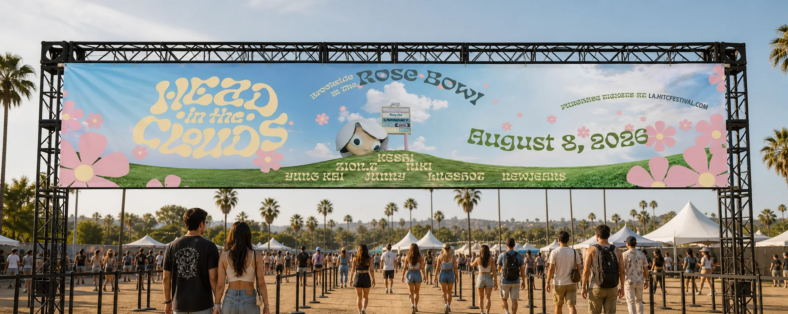
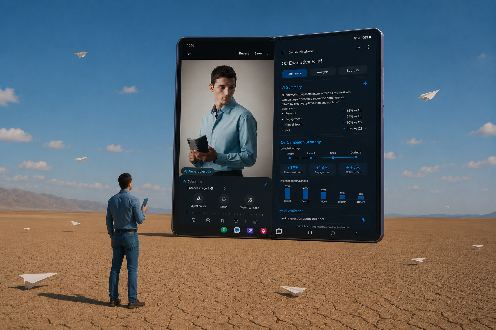
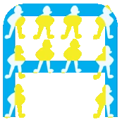
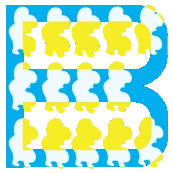
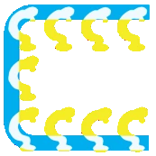
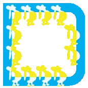
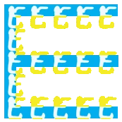

Hi, I’m Dominic. I design experiences that begin with people.
I’m a junior at the Rhode Island School of Design studying Graphic Design with a minor in Computation and Psychology. My work starts with listening; I talk to users, find where the experience breaks, and design interfaces, systems, and campaigns that make the next step feel obvious.
I’ve designed for Cheil USA (Samsung), Providence Promise, Living Outside, and Girl Scouts.
Selected work
-

Providence Promise
UX Research · Mobile App · Usability Testing
Families saving for college were chasing updates across WhatsApp, email, texts, and paper mail just to earn what they were owed. Our team designed one app that keeps it all in one place.
- 2 semesters
- Team of 6
- Figma, FigJam, Figma Make
-

Not Only for Bodega Cats
Interaction Design · Web · Packaging
Fifty convenience-store images, annotated with five symbols for how people move through a store, made public as a can of cat food and a website where anyone can add their own reading.
- 3 weeks
- Solo
- Figma, Blender, HTML/CSS/JS
-

Mr. Zeno
UX/UI · 3D Modeling · Package Design
A toy and an app that give students a low-stakes place to rehearse professional conversations before they have them for real.
- About 1 week
- Solo
- Figma, Cinema 4D, Spline, Illustrator
-

Head in the Clouds
Brand Identity · Web UI · Information Architecture
A rebrand of 88rising’s festival built around what fans struggle with before and after the music: the heat, confusing passes, and information scattered across Reddit.
- 2 weeks
- Solo
- Figma, Cinema 4D, Illustrator, Photoshop
-

Cheil USA (Samsung)
Campaign Strategy · App Concept · Art Direction
A social-first campaign that keeps Samsung’s foldables at the center of the conversation, including a lifestyle-simulator app that lets people try each phone’s personality before they own it.
- 6 weeks
- Team of 4
- Illustrator, Photoshop, Figma, generative AI
-
Letters A through E from the typeface: blue grid strokes filled with small yellow figures





Moving [Type] Face
Type Design
Two typefaces built to disagree, one ruled and one drawn from my own characters, layered until control and personality share the same letter.
- 1 week
- Solo
- Illustrator, pen and paper
Branding, packaging, and web work beyond these six.
More projects